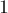
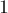
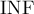

MAXimal
добавлено: 11 Jun 2008 11:00
редактировано: 25 Oct 2011 21:31
Содержание [скрыть]
Дерево отрезков
Дерево отрезков — это структура данных, которая позволяет эффективно (т.е. за асимптотику  ) реализовать операции следующего вида: нахождение суммы/минимума элементов массива в заданном отрезке (
) реализовать операции следующего вида: нахождение суммы/минимума элементов массива в заданном отрезке (![a[l \ldots r]](../tex2png/cache/61de5ad6b5b41c84e862798a8f59f0a9.png) , где
, где  и
и  поступают на вход алгоритма), при этом дополнительно возможно изменение элементов массива: как изменение значения одного элемента, так и изменение элементов на целом подотрезке массива (т.е. разрешается присвоить всем элементам какое-либо значение, либо прибавить ко всем элементам массива какое-либо число).
поступают на вход алгоритма), при этом дополнительно возможно изменение элементов массива: как изменение значения одного элемента, так и изменение элементов на целом подотрезке массива (т.е. разрешается присвоить всем элементам какое-либо значение, либо прибавить ко всем элементам массива какое-либо число).
Вообще, дерево отрезков — очень гибкая структура, и число задач, решаемых ей, теоретически неограниченно. Помимо приведённых выше видов операций с деревьями отрезков, также возможны и гораздо более сложные операции (см. раздел "Усложнённые версии дерева отрезков"). В частности, дерево отрезков легко обобщается на большие размерности: например, для решения задачи о поиске суммы/минимума в некотором подпрямоугольнике данной матрицы (правда, уже только за время ).
Важной особенностью деревьев отрезков является то, что они потребляют линейный объём памяти: стандартному дереву отрезков требуется порядка элементов памяти для работы над массивом размера  .
.
Описание дерева отрезков в базовом варианте
Для начала рассмотрим простейший случай дерева отрезков — дерево отрезков для сумм. Если ставить задачу формально, то у нас есть массив , и наше дерево отрезков должно уметь находить сумму элементов с -го по -ый (это запрос суммы), а также обрабатывать изменение значения одного указанного элемента массива, т.е. фактически реагировать на присвоение (это запрос модификации). Ещё раз повторимся, дерево отрезков должно обрабатывать оба этих запроса за время .
Структура дерева отрезков
Итак, что же представляет из себя дерево отрезков?
Подсчитаем и запомним где-нибудь сумму элементов всего массива, т.е. отрезка ![a[0 \ldots n-1]](../tex2png/cache/2f7c3ec9c849a4dcbfc3195989056b93.png) . Также посчитаем сумму на двух половинках этого массива: и . Каждую из этих двух половинок в свою очередь разобьём пополам, посчитаем и сохраним сумму на них, потом снова разобьём пополам, и так далее, пока текущий отрезок не достигнет длины . Иными словами, мы стартуем с отрезка
. Также посчитаем сумму на двух половинках этого массива: и . Каждую из этих двух половинок в свою очередь разобьём пополам, посчитаем и сохраним сумму на них, потом снова разобьём пополам, и так далее, пока текущий отрезок не достигнет длины . Иными словами, мы стартуем с отрезка ![[0;n-1]](../tex2png/cache/16dc8025ca4b7286177f4afcbe0543b5.png) и каждый раз делим текущий отрезок надвое (если он ещё не стал отрезком единичной длины), вызывая затем эту же процедуру от обеих половинок; для каждого такого отрезка мы храним сумму чисел на нём.
и каждый раз делим текущий отрезок надвое (если он ещё не стал отрезком единичной длины), вызывая затем эту же процедуру от обеих половинок; для каждого такого отрезка мы храним сумму чисел на нём.
Можно говорить, что эти отрезки, на которых мы считали сумму, образуют дерево: корень этого дерева — отрезок , а каждая вершина имеет ровно двух сыновей (кроме вершин-листьев, у которых отрезок имеет длину ). Отсюда и происходит название — "дерево отрезков" (хотя при реализации обычно никакого дерева явно не строится, но об этом ниже в разделе реализации).
Итак, мы описали структуру дерева отрезков. Сразу заметим, что оно имеет линейный размер, а именно, содержит менее  вершин. Понять это можно следующим образом: первый уровень дерева отрезков содержит одну вершину (отрезок ), второй уровень — в худшем случае две вершины, на третьем уровне в худшем случае будет четыре вершины, и так далее, пока число вершин не достигнет . Таким образом, число вершин в худшем случае оценивается суммой .
вершин. Понять это можно следующим образом: первый уровень дерева отрезков содержит одну вершину (отрезок ), второй уровень — в худшем случае две вершины, на третьем уровне в худшем случае будет четыре вершины, и так далее, пока число вершин не достигнет . Таким образом, число вершин в худшем случае оценивается суммой .
Стоит отметить, что при , отличных от степеней двойки, не все уровни дерева отрезков будут полностью заполнены. Например, при  левый сын корня есть отрезок , имеющий двух потомков, в то время как правый сын корня — отрезок , являющийся листом. Никаких особых сложностей при реализации это не составляет, но тем не менее это надо иметь в виду.
левый сын корня есть отрезок , имеющий двух потомков, в то время как правый сын корня — отрезок , являющийся листом. Никаких особых сложностей при реализации это не составляет, но тем не менее это надо иметь в виду.
Высота дерева отрезков есть величина — например, потому что длина отрезка в корне дерева равна , а при переходе на один уровень вниз длина отрезков уменьшается примерно вдвое.
Построение
Процесс построения дерева отрезков по заданному массиву  можно делать эффективно следующим образом, снизу вверх: сначала запишем значения элементов в соответствующие листья дерева, затем на основе них посчитаем значения для вершин предыдущего уровня как сумму значений в двух листьях, затем аналогичным образом посчитаем значения для ещё одного уровня, и т.д. Удобно описывать эту операцию рекурсивно: мы запускаем процедуру построения от корня дерева отрезков, а сама процедура построения, если её вызвали не от листа, вызывает себя от каждого из двух сыновей и суммирует вычисленные значения, а если её вызвали от листа — то просто записывает в себя значение этого элемента массива.
можно делать эффективно следующим образом, снизу вверх: сначала запишем значения элементов в соответствующие листья дерева, затем на основе них посчитаем значения для вершин предыдущего уровня как сумму значений в двух листьях, затем аналогичным образом посчитаем значения для ещё одного уровня, и т.д. Удобно описывать эту операцию рекурсивно: мы запускаем процедуру построения от корня дерева отрезков, а сама процедура построения, если её вызвали не от листа, вызывает себя от каждого из двух сыновей и суммирует вычисленные значения, а если её вызвали от листа — то просто записывает в себя значение этого элемента массива.
Асимптотика построения дерева отрезков составит, таким образом,  .
.
Запрос суммы
Рассмотрим теперь запрос суммы. На вход поступают два числа и , и мы должны за время посчитать сумму чисел на отрезке .
Для этого мы будем спускаться по построенному дереву отрезков, используя для подсчёта ответа посчитанные ранее суммы на каждой вершине дерева. Изначально мы встаём в корень дерева отрезков. Посмотрим, в какие из двух его сыновей попадает отрезок запроса ![[l \ldots r]](../tex2png/cache/653023af1da32cf3f51fe321fa0778da.png) (напомним, что сыновья корня дерева отрезков — это отрезки
(напомним, что сыновья корня дерева отрезков — это отрезки ![[0 \ldots n/2]](../tex2png/cache/6e1128658239f9f68b765b0e3a3d1a6a.png) и ). Возможны два варианта: что отрезок попадает только в одного сына корня, и что, наоборот, отрезок пересекается с обоими сыновьями.
и ). Возможны два варианта: что отрезок попадает только в одного сына корня, и что, наоборот, отрезок пересекается с обоими сыновьями.
Первый случай прост: просто перейдём в того сына, в котором лежит наш отрезок-запрос, и применим описываемый здесь алгоритм к текущей вершине.
Во втором же случае нам не остаётся других вариантов, кроме как перейти сначала в левого сына и посчитать ответ на запрос в нём, а затем — перейти в правого сына, посчитать в нём ответ и прибавить к нашему ответу. Иными словами, если левый сын представлял отрезок , а правый — отрезок (заметим, что ), то мы перейдём в левого сына с запросом , а в правого — с запросом .
Итак, обработка запроса суммы представляет собой рекурсивную функцию, которая всякий раз вызывает себя либо от левого сына, либо от правого (не изменяя границы запроса в обоих случаях), либо от обоих сразу (при этом деля наш запрос на два соответствующих подзапроса). Однако рекурсивные вызовы будем делать не всегда: если текущий запрос совпал с границами отрезка в текущей вершине дерева отрезков, то в качестве ответа будем возвращать предвычисленное значение суммы на этом отрезке, записанное в дереве отрезков.
Иными словами, вычисление запроса представляет собой спуск по дереву отрезков, который распространяется по всем нужным ветвям дерева, и для быстрой работы использующий уже посчитанные суммы по каждому отрезку в дереве отрезков.
Почему же асимптотика этого алгоритма будет ? Для этого посмотрим на каждом уровне дерева отрезков, сколько максимум отрезков могла посетить наша рекурсивная функция при обработке какого-либо запроса. Утверждается, что таких отрезков не могло быть более четырёх; тогда, учитывая оценку для высоты дерева, мы и получаем нужную асимптотику времени работы алгоритма.
Покажем, что эта оценка о четырёх отрезках верна. В самом деле, на нулевом уровне дерева запросом затрагивается единственная вершина — корень дерева. Дальше на первом уровне рекурсивный вызов в худшем случае разбивается на два рекурсивных вызова, но важно здесь то, что запросы в этих двух вызовах будут соседствовать, т.е. число запроса во втором рекурсивном вызове будет на единицу больше числа  запроса в первом рекурсивном вызове. Отсюда следует, что на следующем уровне каждый из этих двух вызовов мог породить ещё по два рекурсивных вызова, но в таком случае половина этих запросов отработает нерекурсивно, взяв нужное значение из вершины дерева отрезков. Таким образом, всякий раз у нас будет не более двух реально работающих ветвей рекурсии (можно сказать, что одна ветвь приближается к левой границе запроса, а вторая ветвь — к правой), а всего число затронутых отрезков не могло превысить высоты дерева отрезков, умноженной на четыре, т.е. оно есть число .
запроса в первом рекурсивном вызове. Отсюда следует, что на следующем уровне каждый из этих двух вызовов мог породить ещё по два рекурсивных вызова, но в таком случае половина этих запросов отработает нерекурсивно, взяв нужное значение из вершины дерева отрезков. Таким образом, всякий раз у нас будет не более двух реально работающих ветвей рекурсии (можно сказать, что одна ветвь приближается к левой границе запроса, а вторая ветвь — к правой), а всего число затронутых отрезков не могло превысить высоты дерева отрезков, умноженной на четыре, т.е. оно есть число .
В завершение можно привести и такое понимание работы запроса суммы: входной отрезок разбивается на несколько подотрезков, ответ на каждом из которых уже подсчитан и сохранён в дереве. Если делать это разбиение правильным образом, то благодаря структуре дерева отрезков число необходимых подотрезков всегда будет , что и даёт эффективность работы дерева отрезков.
Запрос обновления
Напомним, что запрос обновления получает на вход индекс  и значение
и значение  , и перестраивает дерево отрезков таким образом, чтобы оно соответствовало новому значению . Этот запрос должен также выполняться за время .
, и перестраивает дерево отрезков таким образом, чтобы оно соответствовало новому значению . Этот запрос должен также выполняться за время .
Это более простой запрос по сравнению с запросом подсчёта суммы. Дело в том, что элемент участвует только в относительно небольшом числе вершин дерева отрезков: а именно, в вершинах — по одной с каждого уровня.
Тогда понятно, что запрос обновления можно реализовать как рекурсивную функцию: ей передаётся текущая вершина дерева отрезков, и эта функция выполняет рекурсивный вызов от одного из двух своих сыновей (от того, который содержит позицию в своём отрезке), а после этого — пересчитывает значение суммы в текущей вершине точно таким же образом, как мы это делали при построении дерева отрезков (т.е. как сумма значений по обоим сыновьям текущей вершины).
Реализация
Основной реализационный момент — это то, как хранить дерево отрезков в памяти. В целях простоты мы не будем хранить дерево в явном виде, а воспользуемся таким трюком: скажем, что корень дерева имеет номер , его сыновья — номера  и
и  , их сыновья — номера с
, их сыновья — номера с  по
по  , и так далее. Легко понять корректность следующей формулы: если вершина имеет номер , то пусть её левый сын — это вершина с номером , а правый — с номером .
, и так далее. Легко понять корректность следующей формулы: если вершина имеет номер , то пусть её левый сын — это вершина с номером , а правый — с номером .
Такой приём значительно упрощает программирование дерева отрезков, — теперь нам не нужно хранить в памяти структуру дерева отрезков, а только лишь завести какой-либо массив для сумм на каждом отрезке дерева отрезков.
Стоит только отметить, что размер этого массива при такой нумерации надо ставить не , а . Дело в том, что такая нумерация не идеально работает в случае, когда не является степенью двойки — тогда появляются пропущенные номера, которым не соответствуют никакие вершины дерева (фактически, нумерация ведёт себя подобно тому, как если бы округлили бы вверх до ближайшей степени двойки). Это не создаёт никаких сложностей при реализации, однако приводит к тому, что размер массива надо увеличивать до .
Итак, дерево отрезков мы храним просто в виде массива ![t[]](../tex2png/cache/ef81dd9a1c266209451a0f924cf42f69.png) , размера вчетверо больше размера входных данных:
, размера вчетверо больше размера входных данных:
int n, t[4*MAXN];
Процедура построения дерева отрезков по заданному массиву ![a[]](../tex2png/cache/0f0e294f3fa9d716ea988ff8370f698d.png) выглядит следующим образом: это рекурсивная функция, ей передаётся сам массив , номер
выглядит следующим образом: это рекурсивная функция, ей передаётся сам массив , номер  текущей вершины дерева, и границы и отрезка, соответствующего текущей вершине дерева. Из основной программы вызывать эту функцию следует с параметрами , , .
текущей вершины дерева, и границы и отрезка, соответствующего текущей вершине дерева. Из основной программы вызывать эту функцию следует с параметрами , , .
void build (int a[], int v, int tl, int tr) { if (tl == tr) t[v] = a[tl]; else { int tm = (tl + tr) / 2; build (a, v*2, tl, tm); build (a, v*2+1, tm+1, tr); t[v] = t[v*2] + t[v*2+1]; } }
Далее, функция для запроса суммы представляет из себя также рекурсивную функцию, которой таким же образом передаётся информация о текущей вершине дерева (т.е. числа , , , которым в основной программе следует передавать значения ,  ,
,  соответственно), а помимо этого — также границы и текущего запроса. В целях упрощения кода эта фукнция всегда делает по два рекурсивных вызова, даже если на самом деле нужен один — просто лишнему рекурсивному вызову передастся запрос, у которого r">, что легко отсекается дополнительной проверкой в самом начале функции.
соответственно), а помимо этого — также границы и текущего запроса. В целях упрощения кода эта фукнция всегда делает по два рекурсивных вызова, даже если на самом деле нужен один — просто лишнему рекурсивному вызову передастся запрос, у которого r">, что легко отсекается дополнительной проверкой в самом начале функции.
int sum (int v, int tl, int tr, int l, int r) { if (l > r) return 0; if (l == tl && r == tr) return t[v]; int tm = (tl + tr) / 2; return sum (v*2, tl, tm, l, min(r,tm)) + sum (v*2+1, tm+1, tr, max(l,tm+1), r); }
Наконец, запрос модификации. Ему точно так же передаётся информация о текущей вершине дерева отрезков, а дополнительно указывается индекс меняющегося элемента, а также его новое значение.
void update (int v, int tl, int tr, int pos, int new_val) { if (tl == tr) t[v] = new_val; else { int tm = (tl + tr) / 2; if (pos <= tm) update (v*2, tl, tm, pos, new_val); else update (v*2+1, tm+1, tr, pos, new_val); t[v] = t[v*2] + t[v*2+1]; } }
Стоит отметить, что функцию  легко сделать нерекурсивной, поскольку рекурсия в ней хвостовая, т.е. разветвлений никогда не происходит: один вызов может породить только один рекурсивный вызов. При нерекурсивной реализации скорость работы может вырасти в несколько раз.
легко сделать нерекурсивной, поскольку рекурсия в ней хвостовая, т.е. разветвлений никогда не происходит: один вызов может породить только один рекурсивный вызов. При нерекурсивной реализации скорость работы может вырасти в несколько раз.
Из других оптимизаций стоит упомянуть, что умножения и деления на два стоит заменить битовыми операциями — это также немного улучшает производительность дерева отрезков.
Усложнённые версии дерева отрезков
Дерево отрезков — очень гибкая структура, и позволяет делать обобщения во многих различных направлениях. Попытаемся ниже классифицировать их.
Более сложные функции и запросы
Улучшения дерева отрезков в этом направлении могут быть как довольно очевидными (как в случае минимума/максимума вместо суммы), так и весьма и весьма нетривиальными.
Поиск минимума/максимума
Немного изменим условие задачи, описанной выше: вместо запроса суммы будем производить теперь запрос минимума/максимума на отрезке.
Тогда дерево отрезков для такой задачи практически ничем не отличается от дерева отрезков, описанного выше. Просто надо изменить способ вычисления в функциях и , а также вычисление возвращаемого ответа в функции (заменить суммирование на минимум/максимум).
Поиск минимума/максимума и количества раз, которое он встречается
Задача аналогична предыдущей, только теперь помимо максимума требуется также возвращать количество его вхождений. Эта задача встаёт естественным образом, например, при решении с помощью дерева отрезков такой задачи: найти количество наидлиннейших возрастающих подпоследовательностей в заданном массиве.
Для решения этой задачи в каждой вершине дерева отрезков будем хранить пару чисел: кроме максимума количество его вхождений на соответствующем отрезке. Тогда при построении дерева мы должны просто по двум таким парам, полученным от сыновей текущей вершины, получать пару для текущей вершины.
Объединение двух таких пар в одну стоит выделить в отдельную функцию, поскольку эту операцию надо будет производить и в запросе модификации, и в запросе поиска максимума.
pair<int,int> t[4*MAXN]; pair<int,int> combine (pair<int,int> a, pair<int,int> b) { if (a.first > b.first) return a; if (b.first > a.first) return b; return make_pair (a.first, a.second + b.second); } void build (int a[], int v, int tl, int tr) { if (tl == tr) t[v] = make_pair (a[tl], 1); else { int tm = (tl + tr) / 2; build (a, v*2, tl, tm); build (a, v*2+1, tm+1, tr); t[v] = combine (t[v*2], t[v*2+1]); } } pair<int,int> get_max (int v, int tl, int tr, int l, int r) { if (l > r) return make_pair (-INF, 0); if (l == tl && r == tr) return t[v]; int tm = (tl + tr) / 2; return combine ( get_max (v*2, tl, tm, l, min(r,tm)), get_max (v*2+1, tm+1, tr, max(l,tm+1), r) ); } void update (int v, int tl, int tr, int pos, int new_val) { if (tl == tr) t[v] = make_pair (new_val, 1); else { int tm = (tl + tr) / 2; if (pos <= tm) update (v*2, tl, tm, pos, new_val); else update (v*2+1, tm+1, tr, pos, new_val); t[v] = combine (t[v*2], t[v*2+1]); } }
Поиск наибольшего общего делителя / наименьшего общего кратного
Т.е. мы хотим научиться искать НОД/НОК всех чисел в заданном отрезке массива.
Это довольно интересное обобщение дерева отрезков получается абсолютно таким же путём, как и деревья отрезков для суммы/минимума/максимума: достаточно просто хранить в каждой вершине дерева НОД/НОК всех чисел в соответствующем отрезке массива.
Подсчёт количества нулей, поиск  -го нуля
-го нуля
В этой задаче мы хотим научиться отвечать на запрос количества нулей в заданном отрезке массива, а также на запрос нахождения  -го нулевого элемента.
-го нулевого элемента.
Снова немного изменим данные, хранящиеся в дереве отрезков: будем хранить теперь в массиве количество нулей, встречающихся в соответствующих отрезках массива. Понятно, как поддерживать и использовать эти данные в функциях , , , — тем самым мы решили задачу о количестве нулей в заданном отрезке массива.
Теперь научимся решать задачу о поиске позиции -го вхождения нуля в массиве. Для этого будем спускаться по дереву отрезков, начиная с корня, и переходя каждый раз в левого или правого сына в зависимости от того, в каком из отрезков находится искомый -ый ноль. В самом деле, чтобы понять, в какого сына нам надо переходить, достаточно посмотреть на значение, записанное в левом сыне: если оно больше либо равно , то переходить надо в левого сына (потому что в его отрезке есть как минимум нулей), а иначе — переходить в правого сына.
При реализации можно отсечь случай, когда -го нуля не существует, ещё при входе в функцию, вернув в качестве ответа, например,  .
.
int find_kth (int v, int tl, int tr, int k) { if (k > t[v]) return -1; if (tl == tr) return tl; int tm = (tl + tr) / 2; if (t[v*2] >= k) return find_kth (v*2, tl, tm, k); else return find_kth (v*2+1, tm+1, tr, k - t[v*2]); }
Поиск префикса массива с заданной суммой
Задача такая: требуется по данному значению быстро найти такое , что сумма первых элементов массива больше либо равна (считая, что массив содержит только неотрицательные числа).
Эту задачу можно решать бинарным поиском, вычисляя каждый раз внутри него сумму на том или ином префиксе массива, но это приведёт к решению за время .
Вместо этого можно воспользоваться той же самой идеей, что и в предыдущем пункте, и искать искомую позицию одним спуском по дереву: переходя каждый раз в левого или правого сына в зависимости от величины суммы в левом сыне. Тогда ответ на запрос поиска будет представлять собой один такой спуск по дереву, а, следовательно, будет выполняться за .
Поиск подотрезка с максимальной суммой
По-прежнему на вход даётся массив , и поступают запросы  , которые означают: найти такой подотрезок , что , , и сумма этого отрезка максимальна. Запросы модификации отдельных элементов массива допускаются. Элементы массива могут быть отрицательными (и, например, если все числа отрицательны, то оптимальным подотрезком будет пустой — на нём сумма равна нулю).
, которые означают: найти такой подотрезок , что , , и сумма этого отрезка максимальна. Запросы модификации отдельных элементов массива допускаются. Элементы массива могут быть отрицательными (и, например, если все числа отрицательны, то оптимальным подотрезком будет пустой — на нём сумма равна нулю).
Это весьма нетривиальное обобщение дерева отрезков получается следующим образом. Будем хранить в каждой вершине дерева отрезков четыре величины: сумму на этом отрезке, максимальную сумму среди всех префиксов этого отрезка, максимальную сумму среди всех суффиксов, а также максимальную сумму подотрезка на нём. Иными словами, для каждого отрезка дерева отрезков ответ на нём уже предпосчитан, а также дополнительно ответ посчитан среди всех отрезков, упирающихся в левую границу отрезка, а также среди всех отрезков, упирающихся в правую границу.
Как же построить дерево отрезков с такими данными? Снова подойдём к этому с рекурсивной точки зрения: пусть для текущей вершины все четыре значения в левом сыне и в правом сыне уже подсчитаны, посчитаем их теперь для самой вершины. Заметим, что ответ в самой вершине равен:
- либо ответу в левом сыне, что означает, что лучший подотрезок в текущей вершине целиком помещается в отрезок левого сына,
- либо ответу в правом сыне, что означает, что лучший подотрезок в текущей вершине целиком помещается в отрезок правого сына,
- либо сумме максимального суффикса в левом сыне и максимального префикса в правом сыне, что означает, что лучший подотрезок лежит своим началом в левом сыне, а концом — в правом.
Значит, ответ в текущей вершине равен максимуму из этих трёх величин. Пересчитывать же максимальную сумму на префиксах и суффиксах ещё проще. Приведём реализацию функции , которой будут передаваться две структуры , содержащие в себе данные о левом и правом сыновьях, и которая возвращает данные в текущей вершине.
struct data { int sum, pref, suff, ans; }; data combine (data l, data r) { data res; res.sum = l.sum + r.sum; res.pref = max (l.pref, l.sum + r.pref); res.suff = max (r.suff, r.sum + l.suff); res.ans = max (max (l.ans, r.ans), l.suff + r.pref); return res; }
Таким образом, мы научились строить дерево отрезков. Отсюда легко получить и реализацию запроса модификации: как и в самом простом дереве отрезков, мы выполняем пересчёт значений во всех изменившихся вершинах дерева отрезков, для чего используем всё ту же функцию . Для вычисления значений дерева в листьях также вспомогательную функцию , которая возвращает структуру , вычисленную по одному числу .
data make_data (int val) { data res; res.sum = val; res.pref = res.suff = res.ans = max (0, val); return res; } void build (int a[], int v, int tl, int tr) { if (tl == tr) t[v] = make_data (a[tl]); else { int tm = (tl + tr) / 2; build (a, v*2, tl, tm); build (a, v*2+1, tm+1, tr); t[v] = combine (t[v*2], t[v*2+1]); } } void update (int v, int tl, int tr, int pos, int new_val) { if (tl == tr) t[v] = make_data (new_val); else { int tm = (tl + tr) / 2; if (pos <= tm) update (v*2, tl, tm, pos, new_val); else update (v*2+1, tm+1, tr, pos, new_val); t[v] = combine (t[v*2], t[v*2+1]); } }
Осталось разобраться с ответом на запрос. Для этого мы так же, как и раньше, спускаемся по дереву, разбивая тем самым отрезок запроса на несколько подотрезков, совпадающих с отрезками дерева отрезков, и объединяем ответы в них в единый ответ на всю задачу. Тогда понятно, что работа ничем не отличается от работы обычного дерева отрезков, только надо вместо простого суммирования/минимума/максимума значений использовать функцию . Приведённая ниже реализация немного отличается от реализации запроса : она не допускает случаев, когда левая граница запроса превышает правую границу (иначе возникнут неприятные случаи — какую структуру возврашать, когда отрезок запроса пустой?..).
data query (int v, int tl, int tr, int l, int r) { if (l == tl && tr == r) return t[v]; int tm = (tl + tr) / 2; if (r <= tm) return query (v*2, tl, tm, l, r); if (l > tm) return query (v*2+1, tm+1, tr, l, r); return combine ( query (v*2, tl, tm, l, tm), query (v*2+1, tm+1, tr, tm+1, r) ); }
Сохранение всего подмассива в каждой вершине дерева отрезков
Это отдельный подраздел, стоящий особняком от остальных, поскольку в каждой вершине дерева отрезков мы будем хранить не какую-то сжатую информацию об этом подотрезке (сумму, минимум, максимум и т.п.), а все элементы массива, лежащие в этом подотрезке. Таким образом, корень дерева отрезков будет хранить все элементы массива, левый сын корня — первую половину массива, правый сын корня — вторую половину, и так далее.
Самый простой вариант применения этой техники — когда в каждой вершине дерева отрезков хранится отсортированный список всех чисел, встречающихся в соответствующем отрезке. В более сложных вариантах хранятся не списки, а какие-либо структуры данных, построенные над этими списками ( , и т.д.). Но все эти методы объединяет то, что в каждой вершине дерева отрезков хранится некая структура данных, имеющая в памяти размер порядка длины соответствующего отрезка.
, и т.д.). Но все эти методы объединяет то, что в каждой вершине дерева отрезков хранится некая структура данных, имеющая в памяти размер порядка длины соответствующего отрезка.
Первый естественный вопрос, встающий при рассмотрении деревьев отрезков этого класса — это объём потребляемой памяти. Утверждается, что если в каждой вершине дерева отрезков хранится список всех встречающихся на этом отрезке чисел, либо любая другая структура данных размера того же порядка, то в сумме всё дерево отрезков будет занимать  ячеек памяти. Почему это так? Потому что каждое число попадает в отрезков дерева отрезков (хотя бы потому, что высота дерева отрезков есть ).
ячеек памяти. Почему это так? Потому что каждое число попадает в отрезков дерева отрезков (хотя бы потому, что высота дерева отрезков есть ).
Итак, несмотря на кажущуюся расточительность такого дерева отрезков, он потребляет памяти не сильно больше обычного дерева отрезков.
Ниже описано несколько типичных применений такой структуры данных. Стоит сразу отметить явную аналогию деревьев отрезков этого типа с двумерными структурами данных (собственно, в каком-то смысле это и есть двумерная структура данных, но с довольно ограниченными возможностями).
Поиск наименьшего числа, больше либо равного заданного, в указанном отрезке. Запросов модификации нет
Требуется отвечать на запросы следующего вида: , что означает найти минимальное число в отрезке , которое больше либо равно .
Построим дерево отрезков, в котором в каждой вершине будем хранить отсортированный список всех чисел, встречающихся на соответствующем отрезке. Например, корень будет содержать массив в отсортированном виде. Как построить такое дерево отрезков максимально эффективно? Для этого подойдём к задаче, как обычно, с точки зрения рекурсии: пусть для левого и правого сыновей текущей вершины эти списки уже построены, и нам требуется построить этот список для текущей вершины. При такой постановке вопроса становится почти очевидно, что это можно сделать за линейное время: нам просто надо объединить два отсортированных списка в один, что делается одним проходом по ним с двумя указателями. Пользователям C++ ещё проще, потому что этот алгоритм слияния уже включён в стандартную библиотеку STL:
vector<int> t[4*MAXN]; void build (int a[], int v, int tl, int tr) { if (tl == tr) t[v] = vector<int> (1, a[tl]); else { int tm = (tl + tr) / 2; build (a, v*2, tl, tm); build (a, v*2+1, tm+1, tr); merge (t[v*2].begin(), t[v*2].end(), t[v*2+1].begin(), t[v*2+1].end(), back_inserter (t[v])); } }
Мы уже знаем, что построенное таким образом дерево отрезков будет занимать памяти. А благодаря такой реализации время его построения также есть величина — ведь каждый список строится за линейное относительно его размера время. (Кстати говоря, здесь прослеживается очевидная аналогия с алгоритмом сортировки слиянием: только здесь мы сохраняем информацию со всех этапов работы алгоритма, а не только итог.)
Теперь рассмотрим ответ на запрос. Будем спускаться по дереву, как это делает стандартный ответ на запрос в дереве отрезков, разбивая наш отрезок на несколько подотрезков (порядка штук). Понятно, что ответ на всю задачу равен минимуму среди ответов на каждом из этих подотрезков. Поймём теперь, как отвечать на запрос на одном таком подотрезке, совпадающем с некоторой вершиной дерева.
Итак, мы пришли в какую-то вершину дерева отрезков и хотим посчитать ответ на ней, т.е. найти минимальное число, больше либо равное данного . Для этого нам всего лишь надо выполнить бинарный поиск по списку, посчитанному в этой вершине дерева, и вернуть первое число из этого списка, больше либо равное .
Таким образом, ответ на запрос в одном подотрезке происходит за , а весь запрос обрабатывается за время .
int query (int v, int tl, int tr, int l, int r, int x) { if (l > r) return INF; if (l == tl && tr == r) { vector<int>::iterator pos = lower_bound (t[v].begin(), t[v].end(), x); if (pos != t[v].end()) return *pos; return INF; } int tm = (tl + tr) / 2; return min ( query (v*2, tl, tm, l, min(r,tm), x), query (v*2+1, tm+1, tr, max(l,tm+1), r, x) ); }
Константа  равна некоторому большому числу, заведомо большему, чем любое число в массиве. Она несёт смысл "ответа в заданном отрезке не существует".
Поиск наименьшего числа, больше либо равного заданного, в указанном отрезке. Допускаются запросы модификации
Задача аналогична предыдущей, только теперь разрешены запросы модификации: обработать присвоение .
Решение также аналогично решению предыдущей задачи, только вместо простых списков в каждой вершине дерева отрезков мы будем хранить сбалансированный список, который позволяет быстро искать требуемое число, удалять его, а также вставлять новое число. Учитывая, что вообще говоря число во входном массиве могут повторяться, оптимальным выбором является структура данных STL .
Построение такого дерева отрезков происходит примерно так же, как и в предыдущей задаче, только теперь надо объединять не отсортированные списки, а , что приведёт к тому, что асимптотика построения ухудшится до (хотя, по-видимому, красно-чёрные деревья позволяют выполнить слияние двух деревьев за линейное время, однако библиотека STL этого не гарантирует).
Ответ на запрос поиска вообще практически эквивалентен приведённому выше коду, только теперь  надо вызывать от .
надо вызывать от .
Наконец, запрос модификации. Для его обработки мы должны спуститься по дереву, внеся изменения во все списков, содержащих затрагиваемый элемент. Мы просто удаляем старое значение этого элемента (не забыв, что нам не надо удалить вместе с ним все повторы этого числа) и вставляем его новое значение.
void update (int v, int tl, int tr, int pos, int new_val) { t[v].erase (t[v].find (a[pos])); t[v].insert (new_val); if (tl != tr) { int tm = (tl + tr) / 2; if (pos <= tm) update (v*2, tl, tm, pos, new_val); else update (v*2+1, tm+1, tr, pos, new_val); } else a[pos] = new_val; }
Обработка этого запроса происходит также за время .
Поиск наименьшего числа, больше либо равного заданного, в указанном отрезке. Ускорение с помощью техники "частичного каскадирования"
Улучшим время ответа на запрос поиска до времени с помощью применения техники "частичного каскадирования" ("fractional cascading").
Частичное каскадирование — это простой приём, который позволяет улучшить время работы нескольких бинарных поисков, ведущихся по одному и тому же значению. В самом деле, ответ на запрос поиска заключается в том, что мы разбиваем нашу задачу на несколько подзадач, каждая из которых затем решается бинарным поиском по числу . Частичное каскадирование позволяет заменить все эти двоичные поиски на один.
Простейшим и самым наглядным примером частичного каскадирования является следующая задача: есть несколько отсортированных списков чисел, и мы должны в каждом списке найти первое число, больше либо равное заданного.
Если бы мы решали задачу "в лоб", то вынуждены были бы запустить бинарный поиск по каждому из этих списков, что, если этих списков много, становится весьма существенным фактором: если всего списков , то асимптотика получится , где — суммарный размер всех списков (асимптотика такова, потому что худший случай — когда все списки примерно равны друг другу по длине, т.е. равны ).
Вместо этого, мы могли бы объединить все эти списки в один отсортированный список, в котором для каждого числа будем хранить список позиций: позицию в первом списке первого числа, больше либо равного , аналогичную позицию во втором списке, и так далее. Иными словами, для каждого встречающегося числа мы храним вместе с этим числом результаты двоичных поисков по нему в каждом из списков. В таком случае асимптотика ответа на запрос получается , что существенно лучше, однако мы вынуждены расплачиваться большим потреблением памяти: а именно, нам требуется  ячеек памяти.
ячеек памяти.
Техника частичного каскадирования идёт дальше в решении этой задачи и добивается потребления памяти  при том же самом времени ответа на запрос . (Для этого мы храним не один большой список длины , а снова возвращаемся к спискам, но вместе с каждым списком храним каждый второй элемент из следующего списка; нам снова придётся вместе с каждым числом записывать его позицию в обоих списках (текущем и следующем), однако это позволит по-прежнему эффективно отвечать на запрос: мы делаем двоичный поиск по первому списку, а затем идём по этим спискам по порядку, переходя каждый раз в следующий список с помощью предпосчитанных указателей, и делая один шаг влево, учитывая тем самым, что половина чисел следующего списка учтена не была).
при том же самом времени ответа на запрос . (Для этого мы храним не один большой список длины , а снова возвращаемся к спискам, но вместе с каждым списком храним каждый второй элемент из следующего списка; нам снова придётся вместе с каждым числом записывать его позицию в обоих списках (текущем и следующем), однако это позволит по-прежнему эффективно отвечать на запрос: мы делаем двоичный поиск по первому списку, а затем идём по этим спискам по порядку, переходя каждый раз в следующий список с помощью предпосчитанных указателей, и делая один шаг влево, учитывая тем самым, что половина чисел следующего списка учтена не была).
Но нам в нашем приложении к дереву отрезков не нужна полная мощь этой техники. Дело в том, что список в текущей вершине содержит все числа, которые могут встречаться в левом и правом сыновьях. Поэтому, чтобы избежать бинарного поиска по списку сына, нам достаточно для каждого списка в дереве отрезков посчитать для каждого числа его позиции в списках левого и правого сыновей (точнее, позиции первого числа, меньшего либо равного текущему).
Таким образом, вместо обычного списка всех чисел мы храним список троек: само число, позиция в списке левого сына, позиция в списке правого сына. Это позволит нам за  определять позицию в списке левого или правого сына, вместо того чтобы делать двоичный список по нему.
определять позицию в списке левого или правого сына, вместо того чтобы делать двоичный список по нему.
Проще всего эту технику применять к задаче, когда запросы модификации отсутствуют, — тогда эти позиции представляют собой просто числа, а подсчитывать их при построении дерева очень легко внутри алгоритма слияния двух отсортированных последовательностей.
В случае, когда разрешены запросы модификации, всё несколько усложняется: эти позиции теперь надо хранить в виде итераторов внутри , а при запросе обновления — правильно уменьшать/увеличивать для тех элементов, для которых это требуется.
Так или иначе, задача уже сводится к чисто реализационным тонкостям, а основная идея — замена бинарных поисков одним бинарным поиском по списку в корне дерева — описана полностью.
Другие возможные направления
Заметим, что эта техника подразумевает под собой целый класс возможных приложений — всё определяется структурой данных, выбранной для хранения в каждой вершине дерева. Выше были рассмотрены приложения с использованием  и , в то время как вообще использоваться может любая другая компактная структура данных: другое дерево отрезков (об этом немного сказано ниже в разделе о многомерных деревьях отрезков), дерево Фенвика, декартово дерево и т.д.
и , в то время как вообще использоваться может любая другая компактная структура данных: другое дерево отрезков (об этом немного сказано ниже в разделе о многомерных деревьях отрезков), дерево Фенвика, декартово дерево и т.д.
Обновление на отрезке
Выше рассматривались только задачи, когда запрос модификации затрагивает единственный элемент массива. На самом деле, дерево отрезков позволяет делать запросы, которые применяются к целым отрезкам подряд идущих элементов, причём выполнять эти запросы за то же время .
Прибавление на отрезке
Начнём рассмотрение деревьев отрезков такого рода с самого простого случая: запрос модификации представляет собой прибавление ко всем числам на некотором подотрезке некоторого числа . Запрос чтения — по-прежнему считывание значения некоторого числа .
Чтобы делать запрос прибавления эффективно, будем хранить в каждой вершине дерева отрезков, сколько надо прибавить ко всем числам этого отрезка целиком. Например, если приходит запрос "прибавить ко всему массиву число 2", то мы поставим в корне дерева число . Тем самым мы сможем обрабатывать запрос прибавления на любом подотрезке эффективно, вместо того чтобы изменять все значений.
Если теперь приходит запрос чтения значения того или иного числа, то нам достаточно спуститься по дереву, просуммировав все встреченные по пути значения, записанные в вершинах дерева.
void build (int a[], int v, int tl, int tr) { if (tl == tr) t[v] = a[tl]; else { int tm = (tl + tr) / 2; build (a, v*2, tl, tm); build (a, v*2+1, tm+1, tr); } } void update (int v, int tl, int tr, int l, int r, int add) { if (l > r) return; if (l == tl && tr == r) t[v] += add; else { int tm = (tl + tr) / 2; update (v*2, tl, tm, l, min(r,tm), add); update (v*2+1, tm+1, tr, max(l,tm+1), r, add); } } int get (int v, int tl, int tr, int pos) { if (tl == tr) return t[v]; int tm = (tl + tr) / 2; if (pos <= tm) return t[v] + get (v*2, tl, tm, pos); else return t[v] + get (v*2+1, tm+1, tr, pos); }
Присвоение на отрезке
Пусть теперь запрос модификации представляет собой присвоение всем элементам некоторого отрезка некоторого значения  . В качестве второго запроса будем рассматривать считывание значения массива .
. В качестве второго запроса будем рассматривать считывание значения массива .
Чтобы делать модификацию на целом отрезке, придётся в каждой вершине дерева отрезков хранить, покрашен ли этот отрезок целиком в какое-либо число или нет (и если покрашен, то хранить само это число). Это позволит нам делать "запаздывающее" обновление дерева отрезков: при запросе модификации мы, вместо того чтобы менять значения во множестве вершин дерева отрезков, поменяем только некоторые из них, оставив флаги "покрашен" для других отрезков, что означает, что весь этот отрезок вместе со своими подотрезками должен быть покрашен в этот цвет.
Итак, после выполнения запроса модификации дерево отрезков становится, вообще говоря, неактуальным — в нём остались недовыполненными некоторые модификации.
Например, если пришёл запрос модификации "присвоить всему массиву какое-то число", то в дереве отрезков мы сделаем единственное изменение — пометим корень дерева, что он покрашен целиком в это число. Остальные же вершины дерева останутся неизменёнными, хотя на самом деле всё дерево должно быть покрашено в одно и то же число.
Предположим теперь, что в том же дереве отрезков пришёл второй запрос модификации — покрасить первую половину массива в какое-либо другое число. Чтобы обработать такой запрос, мы должны покрасить целиком левого сына корня в этот новый цвет, однако перед тем как сделать это, мы должны разобраться с корнем дерева. Тонкость здесь в том, что в дереве должно сохраниться, что правая половина покрашена в старый цвет, а в данный момент в дереве никакой информации для правой половины не сохранено.
Выход таков: произвести проталкивание информации из корня, т.е. если корень дерева был покрашен в какое-либо число, то покрасить в это число его правого и левого сына, а из корня эту отметку убрать. После этого мы можем спокойно красить левого сына корня, не теряя никакой нужной информации.
Обобщая, получаем: при любых запросах с таким деревом (запрос модификации или чтения) во время спуска по дереву мы всегда должны делать проталкивание информации из текущей вершины в обоих её сыновей. Можно понимать это так, что при спуске по дереву мы применяем запаздывающие модификации, но ровно настолько, насколько это необходимо (чтобы не ухудшить асимптотику с ).
При реализации это означает, что нам надо сделать функцию , которой будет передаваться вершина дерева отрезков, и она будет производить проталкивание информации из этой вершины в обоих её сыновей. Вызывать эту функцию следует в самом начале функций обработки запросов (но не вызывать её из листьев, ведь из листа проталкивать информацию не надо, да и некуда).
void push (int v) { if (t[v] != -1) { t[v*2] = t[v*2+1] = t[v]; t[v] = -1; } } void update (int v, int tl, int tr, int l, int r, int color) { if (l > r) return; if (l == tl && tr == r) t[v] = color; else { push (v); int tm = (tl + tr) / 2; update (v*2, tl, tm, l, min(r,tm), color); update (v*2+1, tm+1, tr, max(l,tm+1), r, color); } } int get (int v, int tl, int tr, int pos) { if (tl == tr) return t[v]; push (v); int tm = (tl + tr) / 2; if (pos <= tm) return get (v*2, tl, tm, pos); else return get (v*2+1, tm+1, tr, pos); }
Функцию можно было бы реализовать и по-другому: не делать в ней запаздывающих обновлений, а сразу возвращать ответ, как только она попадает в вершину дерева отрезков, целиком покрашенную в тот или иной цвет.
Прибавление на отрезке, запрос максимума
Пусть теперь запросом модификации снова будет запрос прибавления ко всем числам некоторого подотрезка одного и того же числа, а запросом чтения будет нахождение максимума в некотором подотрезке.
Тогда в каждой вершине дерева отрезков надо будет дополнительно хранить максимум на всём этом подотрезке. Но тонкость здесь заключается в том, как надо пересчитывать эти значения.
Например, пусть произошёл запрос "прибавить ко всей первой половине, т.е. , число 2". Тогда в дереве это отразится записью числа в левого сына корня. Как теперь посчитать новое значение максимума в левом сыне и в корне? Здесь становится важно не запутаться — какой максимум хранится в вершине дерева: максимум без учёта прибавления на всей этой вершине, или же с учётом его. Выбрать можно любой из этих подходов, но главное — последовательно использовать его везде. Например, при первом подходе максимум в корне будет получаться как максимум из двух чисел: максимум в левом сыне плюс прибавление в левом сыне, и максимум в правом сыне плюс прибавление в нём. При втором же подходе максимум в корне будет получаться как прибавление в корне плюс максимум из максимумов в левом и правом сыновьях.
Другие направления
Здесь были рассмотрены только базовые применения деревьев отрезков в задачах с модификациями на отрезке. Остальные задачи получаются на основе тех же самых идей, что описаны здесь.
Важно только быть очень аккуратным при работе с отложенными модификациями: следует помнить, что даже если в текущей вершине мы уже "протолкнули" отложенную модификацию, то в левом и правом сыновьях, скорее всего, этого ещё не сделали. Поэтому часто необходимым является вызывать также от левого и правого сыновей текущей вершины, либо же аккуратно учитывать отложенные модификации в них.
Обобщение на большие размерности
Дерево отрезков обобщается вполне естественным образом на двумерный и вообще многомерный случай. Если в одномерном случае мы разбивали индексы массива на отрезки, то в двумерном случае теперь будем сначала разбивать всё по первым индексам, а для каждого отрезка по первым индексам — строить обычное дерево отрезков по вторым индексам. Таким образом, основная идея решения — это вкладывание деревьев отрезков по вторым индексам внутрь дерева отрезков по первым индексам.
Поясним эту идею на примере конкретной задачи.
Двумерное дерево отрезков в простейшем варианте
Дана прямоугольная матрица , и поступают запросы поиска суммы (или минимума/максимума) на некоторых подпрямоугольниках , а также запросы модификации отдельных элементов матрицы (т.е. запросы вида ).
Итак, будем строить двумерное дерево отрезков: сначала дерево отрезков по первой координате (), затем — по второй ( ).
).
Чтобы процесс построения был более понятен, можно на время забыть, что исходный массив был двумерным, и оставить только первую координату. Будем строить обычное одномерное дерево отрезков, работая только с первой координатой. Но в качестве значения каждого отрезка мы будем записывать не какое-то число, как в одномерном случае, а целое дерево отрезков: т.е. в этот момент мы вспоминаем, что у нас есть ещё и вторая координата; но т.к. в этот момент уже зафиксировано, что первая координата есть некоторый отрезок , то мы фактически работаем с такой полосой , и для неё строим дерево отрезков.
Приведём реализацию операции построения двумерного дерева. Она фактически представляет собой два отдельных блока: построение дерева отрезков по координате () и по координате (). Если первая функция почти ничем не отличается от обычного одномерного дерева, то вторая вынуждена разбираться отдельно с двумя случаями: когда текущий отрезок по первой координате () имеет единичную длину, и когда — длину, большую единицы. В первом случае мы просто берём нужное значение из матрицы ![a[][]](../tex2png/cache/f9fa957c4ed546b728381d1556189238.png) , а во втором — объединяем значения двух деревьев отрезков из левого сына и правого сына по координате .
, а во втором — объединяем значения двух деревьев отрезков из левого сына и правого сына по координате .
void build_y (int vx, int lx, int rx, int vy, int ly, int ry) { if (ly == ry) if (lx == rx) t[vx][vy] = a[lx][ly]; else t[vx][vy] = t[vx*2][vy] + t[vx*2+1][vy]; else { int my = (ly + ry) / 2; build_y (vx, lx, rx, vy*2, ly, my); build_y (vx, lx, rx, vy*2+1, my+1, ry); t[vx][vy] = t[vx][vy*2] + t[vx][vy*2+1]; } } void build_x (int vx, int lx, int rx) { if (lx != rx) { int mx = (lx + rx) / 2; build_x (vx*2, lx, mx); build_x (vx*2+1, mx+1, rx); } build_y (vx, lx, rx, 1, 0, m-1); }
Такое дерево отрезков занимает по-прежнему линейный объём памяти, но уже с большей константой: ячеек памяти. Понятно, что строится оно описанной выше процедурой тоже за линейное время.
Перейдем теперь к обработке запросов. Отвечать на двумерный запрос будем по тому же самому принципу: сначала разбивать запрос по первой координате, а затем, когда мы дошли до какой-то вершины дерева отрезков по первой координате — вызывать запрос от соответствующего дерева отрезков по второй координате.
int sum_y (int vx, int vy, int tly, int try_, int ly, int ry) { if (ly > ry) return 0; if (ly == tly && try_ == ry) return t[vx][vy]; int tmy = (tly + try_) / 2; return sum_y (vx, vy*2, tly, tmy, ly, min(ry,tmy)) + sum_y (vx, vy*2+1, tmy+1, try_, max(ly,tmy+1), ry); } int sum_x (int vx, int tlx, int trx, int lx, int rx, int ly, int ry) { if (lx > rx) return 0; if (lx == tlx && trx == rx) return sum_y (vx, 1, 0, m-1, ly, ry); int tmx = (tlx + trx) / 2; return sum_x (vx*2, tlx, tmx, lx, min(rx,tmx), ly, ry) + sum_x (vx*2+1, tmx+1, trx, max(lx,tmx+1), rx, ly, ry); }
Эта функция работает за время , поскольку она сначала спускается по дереву по первой координате, а для каждой пройденной вершины этого дерева — делает запрос у обычного дерева отрезков по второй координате.
Наконец, рассмотрим запрос модификации. Мы хотим научиться модифицировать дерево отрезков в соответствии с изменением значения какого-либо элемента . Понятно, что изменения произойдут только в тех вершинах первого дерева отрезков, которые накрывают координату (а таких будет ), а для деревьев отрезков, соответствующих им — изменения будут только в тех вершинах, которые накрывают координату (и таких будет  ). Поэтому реализация запроса модификации не будет сильно отличаться от одномерного случая, только теперь мы сначала спускаемся по первой координате, а затем — по второй.
). Поэтому реализация запроса модификации не будет сильно отличаться от одномерного случая, только теперь мы сначала спускаемся по первой координате, а затем — по второй.
void update_y (int vx, int lx, int rx, int vy, int ly, int ry, int x, int y, int new_val) { if (ly == ry) { if (lx == rx) t[vx][vy] = new_val; else t[vx][vy] = t[vx*2][vy] + t[vx*2+1][vy]; } else { int my = (ly + ry) / 2; if (y <= my) update_y (vx, lx, rx, vy*2, ly, my, x, y, new_val); else update_y (vx, lx, rx, vy*2+1, my+1, ry, x, y, new_val); t[vx][vy] = t[vx][vy*2] + t[vx][vy*2+1]; } } void update_x (int vx, int lx, int rx, int x, int y, int new_val) { if (lx != rx) { int mx = (lx + rx) / 2; if (x <= mx) update_x (vx*2, lx, mx, x, y, new_val); else update_x (vx*2+1, mx+1, rx, x, y, new_val); } update_y (vx, lx, rx, 1, 0, m-1, x, y, new_val); }
Сжатие двумерного дерева отрезков
Пусть задача следующая: есть точек на плоскости, заданных своими координатами , и поступают запросы вида "посчитать количество точек, лежащих в прямоугольнике ". Понятно, что в случае такой задачи становится неоправданно расточительным строить двумерное дерево отрезков с  элементами. Большая часть этой памяти будет потрачена впустую, поскольку каждая отдельно взятая точка может попасть только в отрезков дерева отрезков по первой координате, а, значит, суммарный "полезный" размер всех деревьев отрезков по второй координате есть величина .
элементами. Большая часть этой памяти будет потрачена впустую, поскольку каждая отдельно взятая точка может попасть только в отрезков дерева отрезков по первой координате, а, значит, суммарный "полезный" размер всех деревьев отрезков по второй координате есть величина .
Тогда поступим следующим образом: в каждой вершине дерева отрезков по первой координате будем хранить дерево отрезков, построенное только по тем вторым координатам, которые встречаются в текущем отрезке первых координат. Иными словами, при построении дерева отрезков внутри какой-то вершины с номером и границами мы будем рассматривать только те точки, которые попадают в этот отрезок , и строить дерево отрезков только над ними.
Тем самым мы добьёмся того, что каждое дерево отрезков по второй координате будет занимать ровно столько памяти, сколько и должно. В итоге суммарный объём памяти уменьшится до . Отвечать на запрос мы будем по-прежнему за , просто теперь при вызове запроса от дерева отрезков по второй координате мы должны будем сделать бинарный поиск по второй координате, но асимптотику это не ухудшит.
Но расплатой станет невозможность делать произвольный запрос модификации: в самом деле, если появится новая точка, то это приведёт к тому, что мы должны будем в каком-либо дереве отрезков по второй координате добавить новый элемент в середину, что эффективно сделать невозможно.
В завершение отметим, что сжатое описанным образом двумерное дерево отрезков становится практически эквивалентным описанной выше модификации одномерного дерева отрезков (см. "Сохранение всего подмассива в каждой вершине дерева отрезков"). В частности, получается, что описываемое здесь двумерное дерево отрезков — это просто частный случай сохранения подмассива в каждой вершине дерева, где подмассив сам хранится в виде дерева отрезков. Отсюда следует, что если приходится отказываться от двумерного дерева отрезков по причине невозможности выполнения того или иного запроса, то имеет смысл попробовать заменить вложенное дерево отрезков на какую-либо более мощную структуру данных, например, декартово дерево.
Дерево отрезков с сохранением истории его значений (улучшение до persistent-структуры данных)
Persistent-структурой данных называется такая структура данных, которая при каждой модификации запоминает своё предыдущее состояние. Это позволяет при необходимости обратиться к любой интересующей нас версии этой структуры данных и выполнить запрос на ней.
Дерево отрезков является одной из тех структур данных, которая может быть превращена в persistent-структуру данных (разумеется, мы рассматриваем эффективную persistent-структуру, а не такую, которая копирует всю себя целиком перед каждым обновлением).
В самом деле, любой запрос изменения в дереве отрезков приводит к изменению данных в вершинах, причём вдоль пути, начинающегося из корня. Значит, если мы будем хранить дерево отрезков на указателях (т.е. указатели на левого и правого сыновей сделать указателями, хранящимися в вершине), то при запросе обновления мы должны просто вместо изменения имеющихся вершин создать новые вершины, ссылки из которых направлять на старые вершины. Тем самым, при запросе обновления будет создано новых вершин, в том числе будет создан новый корень дерева отрезков, а вся предыдующая версия дерева, подвешенная за старый корень, останется без изменений.
Приведём пример реализации для простейшего дерева отрезков: когда есть только запрос подсчёта суммы на подотрезке и запрос модификации единственного числа.
struct vertex { vertex * l, * r; int sum; vertex (int val) : l(NULL), r(NULL), sum(val) { } vertex (vertex * l, vertex * r) : l(l), r(r), sum(0) { if (l) sum += l->sum; if (r) sum += r->sum; } }; vertex * build (int a[], int tl, int tr) { if (tl == tr) return new vertex (a[tl]); int tm = (tl + tr) / 2; return new vertex ( build (a, tl, tm), build (a, tm+1, tr) ); } int get_sum (vertex * t, int tl, int tr, int l, int r) { if (l > r) return 0; if (l == tl && tr == r) return t->sum; int tm = (tl + tr) / 2; return get_sum (t->l, tl, tm, l, min(r,tm)) + get_sum (t->r, tm+1, tr, max(l,tm+1), r); } vertex * update (vertex * t, int tl, int tr, int pos, int new_val) { if (tl == tr) return new vertex (new_val); int tm = (tl + tr) / 2; if (pos <= tm) return new vertex ( update (t->l, tl, tm, pos, new_val), t->r ); else return new vertex ( t->l, update (t->r, tm+1, tr, pos, new_val) ); }
С помощью этого подхода можно превратить в persistent-структуру данных практически любое дерево отрезков.